Configuration?
Transition Styles
Themes
Black (default) -
White -
League -
Sky -
Beige -
Simple
Serif -
Blood -
Night -
Moon -
Solarized
𝄞 Music is a language 𝄞
Talk
Hear
See
Communication
Emotions

It's not always soft!
Soft but ...
Feel the anger...
𝄞 Still a language 𝄞
Alphabet
Notes
do re mi fa sol la si
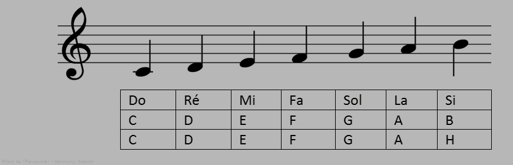Scale
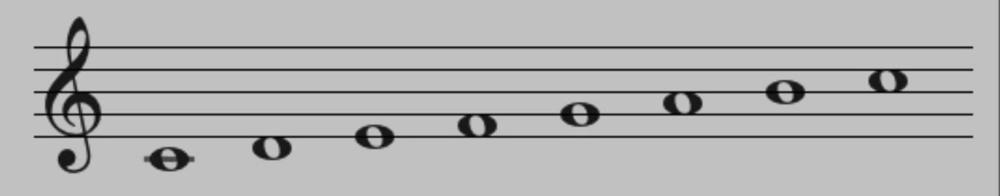Pitch

Harmony Search Algorithm
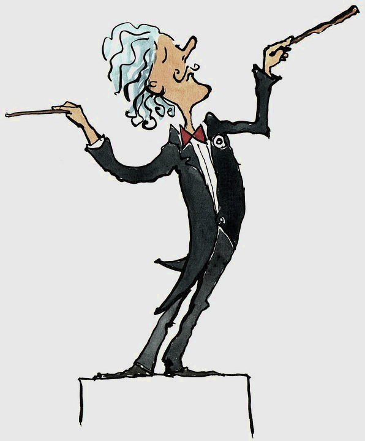Milad As (Ravexina)
Dec 2018
Same old usual things
Same old usual things
Near optimom solution
Reasonable time
Reasonable memory usage
Rules, Randomness
SA, GA, Tabu
Is it possible to develop a new heuristic algorithm with better performance
Better solutions!
Fewer iterations!
Than existing heuristic algorithms?
Music is one of the most satisfying processes generated by human endeavors
A new heuristic algorithm derived from an artificial phenomenon found in musical performance namely the process of "searching for better harmony", can be introduced.
Melody
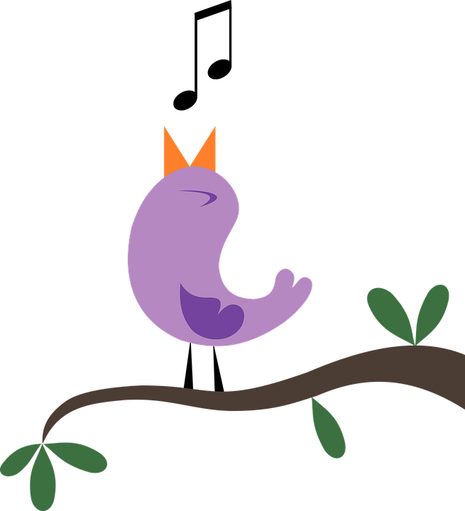A sequence of single notes that is musically satisfying.
Harmony
When 2 or more notes play together at the same time in “harmony” with each other.
Harmony
Music harmony is a combination of sounds considered pleasing from an aesthetic point of view.
Fantastic Harmony
Musical performances
seek a best state determined by aesthetic estimation!
Optimization algorithms seek a best state.
Best state?
Global optimum
Minimum cost
Maximum benefit
Determined by objective function
Sounds can be improved for better aesthetic estimation
Through practice after practice
Values for better objective function evaluation can be improved
Iteration by iteration
comparison between optimization and musical performance
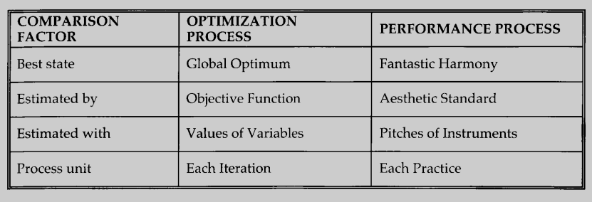Steps in the procedure of HS are as follows:
Step 1. Initialize a Harmony Memory (HM).
Step 2. Improvise a new harmony from HM.
Step 3. If the new harmony is better than minimum harmony in HM, include the new harmony in HM, and exclude the minimum harmony from HM.
Step 4. If stopping criteria are not satisfied, go to step 2.
Consider this simple example
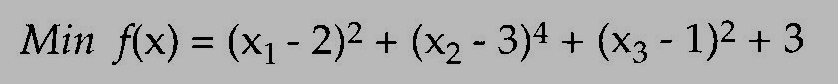Problem!
HMCR
Harmony memory consideration rate
PAR
[1, 2, 4, {6}, 7, 9]
An Example
Possible values of an instrument (a variable) is:
{C, D, E, F, G}
HMCR is 0.95, PAR is 0.10
The instrument now has: {C, E, G} in HM.
All In One
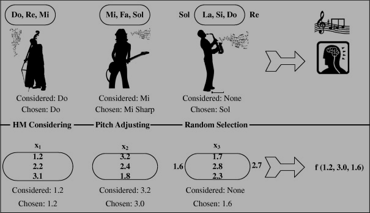Basic Flowchart
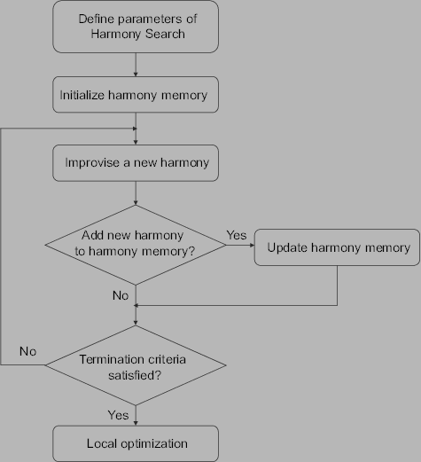HS incorporates the structure of existing heuristic methods.
Preserve history of past vectors
Vary HMCR
Manages several vectors simultaneously
Results obtained from various HS applications
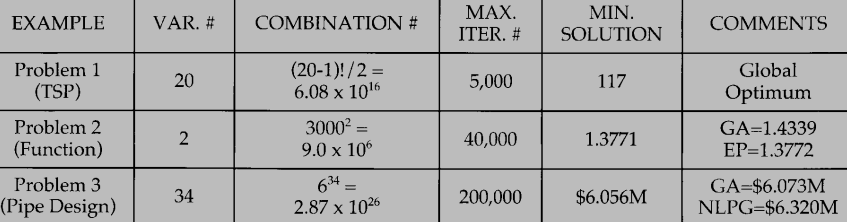Any question?

Code
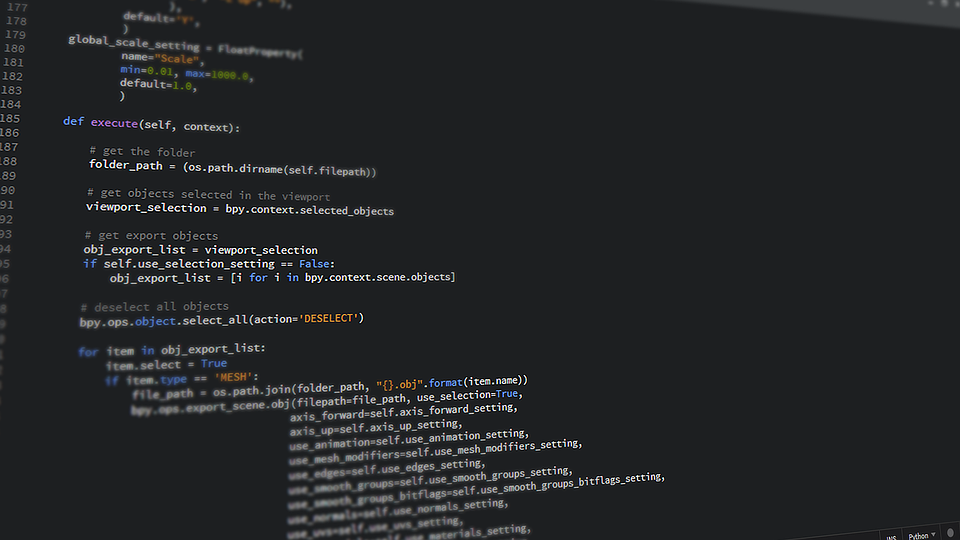Min
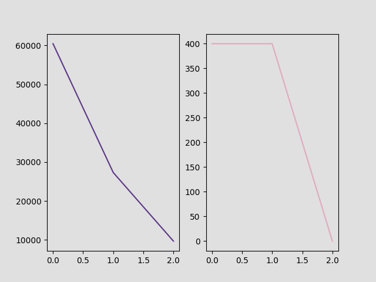TSP
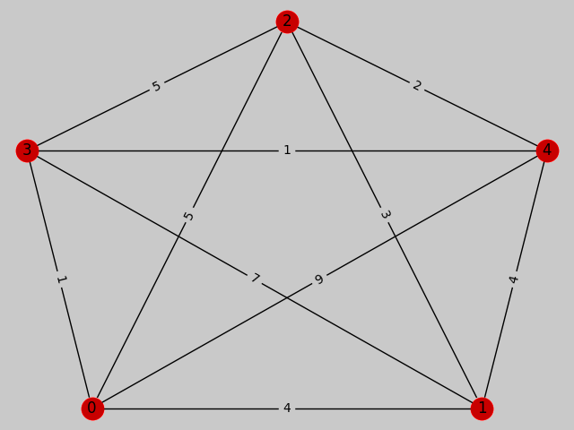TSP Results
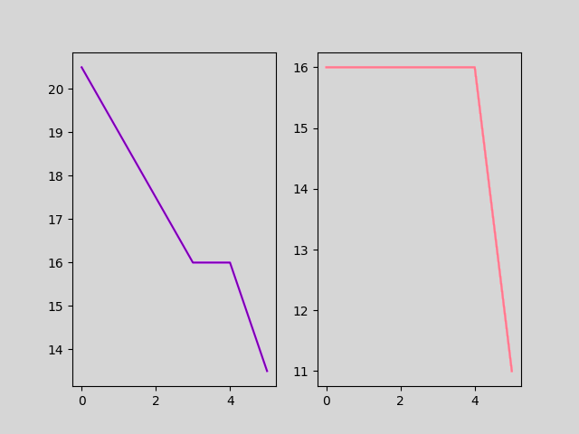Reference:
Geem, Zong W. Kim, Joong H. Loganathan, G.V. "A New Heuristic Optimization Algorithm: Harmony Search." Simulation [USA] 2001. Print.